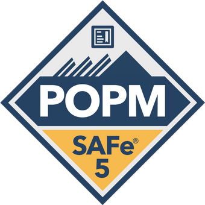
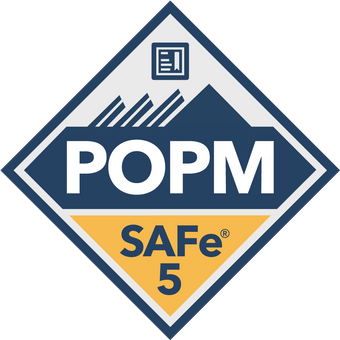
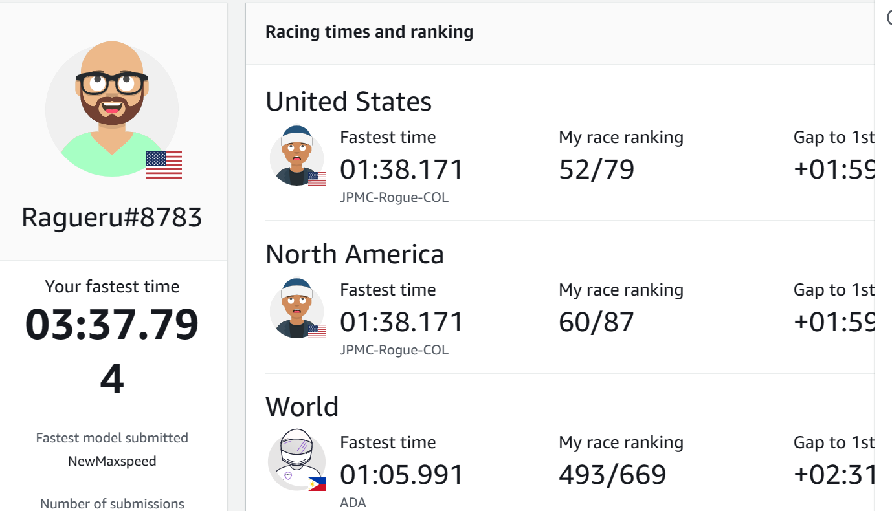
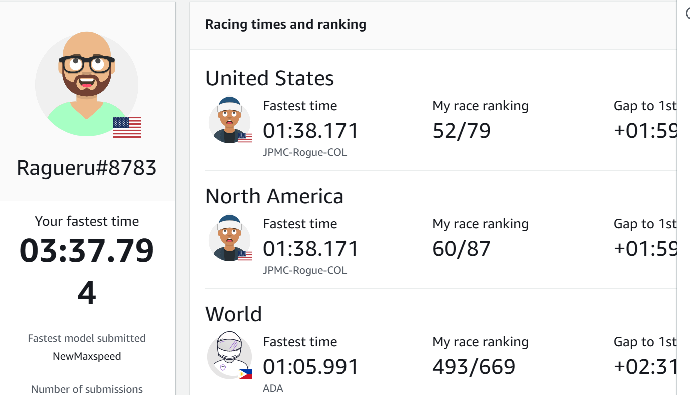

Raghunath Erumal
California, US
847-907-0349
Skills
- AWS
- Self-motivated
- Quick-Learner
- Computer proficiency
- Adaptability
Hobbies
Certifications


 

Work Experience
Project Lead / Hyundai AutoEver America
02/2022 - Present
Senior Quality Analyst / Mercedes-Benz Research & Development North America, Inc
05/2017 to 01/2022
QA Automation Analyst / Cognizant
08/2014 to 04/2017
Education/Projects
Visveswariah Technological University
Bachelor of Engineering / Electronics and Communications
Website using AWS/Cloud Resume Challenge
I made this website as part of the Cloud Resume Challenge. Below are the resources that I used. This website is hosted on AWS using a serverless architecture. The visitor counter uses a API which was created in the AWS service API gateway. Every time a person visits my website the API gets provoked which then invokes a lambda function that writes the value to a Dynamodb table. I also used github actions to create a CI/CD deployment of this website. CloudResumeChallengeWebsite
AWS services
AWS DeepRacer :The fastest way to get rolling with machine learning
DeepRacer is a project created by Amazon Web Services (AWS) that aims to teach people about reinforcement learning (RL) and machine learning (ML) through a fun and engaging activity: racing autonomous cars in a simulated environment. The project provides a fully autonomous 1/18th scale race car equipped with sensors and cameras that can be programmed to navigate a race track using RL. The DeepRacer project consists of several components:
AWS services
 
